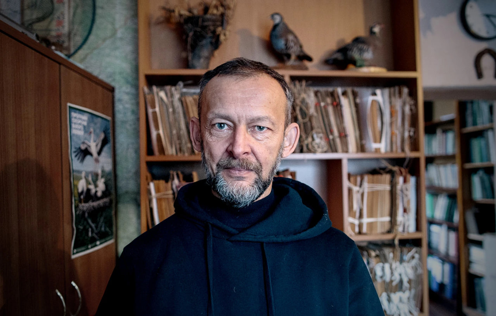

Extinction Threat
13.03.26
There is a small house on a narrow street in Lviv, between a shop and a casino. At the entrance, the stairwell walls are painted a greenish-blue, typical of Soviet buildings. Inside the building, there are thousands of records of Ukrainian birds. It is an archive generations of scientists have been collecting for decades.
Andrii Bokotei, Doctor of Biology, advises leaving the coat on: even when there are no power outages due to the Russian strikes, it’s rather cold in the premises. This was a building for an experimental factory, and now it hosts the funds of the State Museum of Natural History of the National Academy of Sciences of Ukraine. This place isn’t meant for daily visits: “We have a main building, the large palace, built at the turn of the 18th and 19th centuries in the city center. And here is our vault, where part of our museum’s collections are kept, as they grow year by year. Our Lviv museum has one of the largest museum funds in Ukraine: around 400,000 units.”
One of the oldest ornithological archives in Ukraine is part of the fund. It belongs to the Western-Ukrainian Ornithological Society, an NGO that unites both professional ornithologists and amateurs. They monitor bird populations and track dynamic changes in their habitats. These data are used to create registers and track climate change trends.

“We launched our society as a purely regional organization, but as we became successful and effective, colleagues from other regions started joining us. Currently, our society has over 150 members from across Ukraine: Kharkiv, Dnipro, Kyiv, Melitopol, and more. We have representatives in almost all the bigger cities,” Andrii Bokotei says. “Today, we have the largest ornithological library in Ukraine that contains around 13,000 books. We have our own scientific journal, Troglodytes. We publish conference materials and monographs”.
In 2024, the society celebrated its 40th birthday. It means that a lot of data about the birds and the environment of their habitats is preserved on paper. Another category is monitoring rare species included in the Red Data Book (Ukrainian list of endangered species) or regionally endangered species.

Researchers first recorded their earliest data on ordinary grid sheets of paper or forms, and these records are the most valuable. “We have large archives. We carried out various projects, and materials from many of them are on paper. Whole folders of databases,” Andrii Bokotei says. Digitizing them would take years.
Currently, they are focusing on a project to digitize the ornithological archive and submit it to the Global Biodiversity Information Facility (GBIF). The added data has the status of a scientific publication. They are assigned an international DOI index, which can be used to track citations in other sources. The materials of the Western-Ukrainian Ornitological Society were quoted 85 times during 2025.

We are looking at the physical archive documents, which are sorted by bird species: each has its own book-folder tied with fancy laces. These contain mainly the information on nesting. Overall, there are around 24,000 such forms.
Although created manually, these earliest archives are very specific. Small pictures can often be found in them, when ornithologists drew nest locations: trees, landscapes, nearby water bodies, and the overall biotope schemes. The records always include the name of the species, the date and location where the nest was detected, the environment, the altitude of the nest’s location, the tree species, and also the way it was placed. Besides that, there are descriptions of the birds: “Three hatchlings, still bare, the first feathers have grown on their wings. Two hatchlings were larger than the third. The third hatchling was still blind.”

“These materials are unique because they can’t be repeated. Birds are a very mobile group. It’s rather complicated to research them because they move a lot and are tied to a certain location only for a very short period of the year, 2–3 months of nesting.”
First of all, such continuous observations are important because they allow tracking the changes in birds’ habitats: “We see how the climate changes, it becomes much warmer. Dramatic changes in bird habitats are occurring. New species appear in our territory, and those that don’t like warmth and need colder climates move away to the north. For example, our grandmas didn’t know anything about the great egret. And probably our parents, too.” Thanks to the research, ornithologists noted that this bird has become more common over the last 20–30 years: “This species can be spotted now even close to Lviv, without getting too far out of the city.”
The forms are divided by bird species. For example, the first observations of the common blackbird date back to 1977, and new data have been added every year since then. By 2020, there were 790 forms on the blackbird, and the researchers still haven’t managed to process the newest ones.

Andrii pages through the records: “These are probably my forms”, — and he quickly finds a species called common spoonbill. “This is a unique thing, because this species nests exclusively on the Black Sea coast. But in 2009, my colleagues and I found their colony in the north of the Ternopil region, a thousand kilometers away from the places where they naturally nest. This was fantastic. And then, they were found in another place in the Ternopil region, and in the Ivano-Frankivsk region as well. These are very valuable, unique materials on how the species started to change its biology: it moved to the north because of global warming, it became warm and comfortable for it there.”
This kind of information can be used for many years, especially when new technology is introduced. This way, the data can be analyzed from a different angle, taking into account improved knowledge.
Western migration
In the digitization project, and for many decades before, the Western-Ukrainian Ornithological Society has been collaborating with researchers from the Ukrainian South, who have their own, larger, archive — the Azov-Black-Sea Ornithological Work Group. Unlike the Western-Ukrainian Ornithological Society, which was created in the 1980s as a public initiative, the Azov-Black-Sea Group is a bit more “experienced” and was formed around the interdepartmental Azov-Black-Sea Ornithological Station, which has been operating at a highly professional scientific level since its founding.
“This was an ornithological station with a great personnel of very highly professional ornithologists,” Andrii Bokotei recalls. Thanks to the funding by the Zoological Institute of the Melitopol Pedagogical Institute, the researchers of the Azov-Black-Sea Group usually gathered their materials in digital form, so it is much easier to submit them to the GBIF database now: “We submit around 4,000–5,000 records a year, and our colleagues from the South submit 15,000–20,000, and sometimes even more”.
The number of citations of the Azov-Black-Sea Group databases is enormous, Andrii Bokotei says: they were cited 617 times. He explains this number by the much larger territory his colleagues researched, the much larger overall population of aquatic birds, and the “popularity” of seabirds among scientists.

Digitization has also enabled rescuing large amounts of data without the need to evacuate paper records. The records that needed digitization were processed for some time even after the occupation, thanks to employees who couldn’t leave home due to personal circumstances.
Currently, the group has almost stopped working in the South of Ukraine because the majority of the researched territory is either occupied or an active war zone. The building of the station in Melitopol was looted — Russian troops took the equipment and part of the materials that couldn’t be evacuated on time.
Nowadays, the Azov-Black-Sea Group has only a small patch and a group of researchers left in the Odesa and Mykolaiv regions. But even there, access is limited due to mining and military restrictions.
“It’s incomparable to how they were working earlier, as it was a group of ornithologists even larger than ours. So now, the researchers are gathering their archives and digitizing everything they managed to evacuate from Melitopol.”
Hide-and-seek
Russian aggression against Ukraine threatens more than the research directly impacted by the warfare. Currently, the black stork, a much more “northern” Red-Book bird that lives in the Carpathians and Polissia, is also at risk.

When we start talking about storks, Andrii Bokotei tells us exultantly: “Look at the photo: it’s not black, it’s very colorful, its black color is shimmering with all colors of the rainbow under the sun. It’s an incredibly beautiful bird”.
The scientist calls it the direct opposite of the white stork: if the white stork is rarely found beyond human settlements, the black stork is a solitary bird; it finds surviving among humans difficult. To nest, the black stork needs to be as far away from the prying eyes as possible, to see no danger around. That’s why it’s difficult to research and detect, and the distance between nests is tens of kilometers even in the confines of one habitat: “To do the research, we travel every season for two months all over Western Ukraine, from Transcarpathia to the Rivne region,” Andrii Bokotei says.

“In different countries on the migration route, there are camera traps that automatically record all the birds. If the birds with our rings fly by, we receive information that our bird was detected. It usually happens in Israel because the migration route there is narrow,” Andrii Bokotei explains.
In recent decades, some birds have been fitted with small satellite transmitters: “It’s like a cell phone on the back. This transmitter shows us every hour where the bird is currently.”

“So they are party-goers?” my colleague photographer jokes.
“They are indeed,” Andrii says excitedly and shows us a map of the movement of white storks that were detected in Shatsk in 2024 by satellite transmitters. “One of ours has recently been to Kenia. It moves ‘lower’ every time: crosses the equator and flies south. And one of the Polish ones is already in South Africa. It’s 10,000 kilometers! We can see its fantastic route: apparently, he spent a lot of time in the South Sahara. In the desert, in the sands. What they were eating there, what they were doing there, is unclear”.

“Besides that, we have been using photo-traps in the nests of black storks for 10 years now, and we see when the ringed birds come back to them,” he adds.
Black storks are spotted most often in the Polissia region, and there are several hundred of them on Ukrainian territory overall. However, many areas are currently out of reach for research due to mining and warfare. But the observations researchers conducted indicate that 2025 was a difficult year for the species.
“Successful nesting was extremely low: less than half of the birds that came started nesting, and some of them lost their hatches to bad weather. For example, previously in the Volyn region, we were ringing tens of hatchlings in the nests every year, but last year, we barely found a single one.”

It’s a concerning situation, but not a new one: such unfavorable years have happened before. The cold spring, the rains, and the storms probably hindered the birds from laying eggs. The scientists think that females didn’t receive enough food and, consequently, didn't get enough vitamin A, which is necessary for egg production, and which they usually get from fish roe. The war could also affect this decline, but not decisively: the birds do come and repair their nest, but don’t lay eggs.
In 2019, Andrii Bokotei co-authored a Roadmap for the Preservation of the Black Stork in Ukraine, approved by the Ministry of Ecology and Natural Resources at the time. It’s the first document of its kind in Ukraine. It envisages population monitoring, eco-educational measures, creation of protected areas at nesting sites, and much more. The roadmap was supposed to be implemented by the end of 2023, but the full-scale war shifted priorities, so implementation is in progress.

Other obstacles also abound. When environmentalists find a stork nest, a protected area is created around it, where human interference is prohibited. Since 2016, according to a Ministry of Ecology and Natural Resources decree, it must have a one-kilometer radius. This includes the prohibition of sanitary logging, which the scientist believes is useless in this context: in summer, a 500-meter protection zone is sufficient, and in winter, when the stork is absent, 100 meters suffice. Instead, the protection zone made collaboration with foresters considerably harder: “Before the new rules of sanitary logging were implemented, foresters were eager to help us every year: they gave us rides with their vehicles, used their gasoline to fuel them, took us across the forests, and showed us the nests. But after 2016, they stopped collaborating with us, even though we always emphasized the need for seasonal zoning.”
After the beginning of the full-scale invasion, communication with the authorities also became more complicated: “From a legal point of view, the Roadmap is still active. But the Ministry of Ecology and Natural Resources was eliminated. Currently, it’s merged with the Ministry of Economy and Agriculture, and it was very hard to work with them for a long time. Previously, we received reports from the Ministry on the implementation of this project every half a year, sent by the regional authorities. We tried to summarize them and even published materials on how the Roadmap was implemented. But I’m not very optimistic about it, because many regional administrations don’t take the roadmap seriously. They usually refer us to the nature reserve fund institutions we already work with and know what happens there.”

However, Andrii Bokotei is optimistic about the preservation of the black stork population, at least for the near future: the birds live over 10 years, and maybe the circumstances will be more favorable for hatchlings this year.
What we really should be concerned about is another Red Data Book species, the greater spotted eagle. There are only around ten birds of this kind in Ukraine. They are even more secretive than black storks and inhabit swamp forests at the northern ridge of the Volyn, Rivne, and Zhytomyr regions.
“It’s a species that doesn’t want or isn’t able to adapt to living in proximity to people. The black stork is starting to show tendencies to nest closer to people. And it gives scientists optimism, because it’s the only way for it to get a chance of survival. With the greater spotted eagle, the situation is much worse because it shows no signs of being able to coexist with humans. There are more and more humans, we develop more and more territories, and the spotted eagle has very little chance,” Andrii Bokotei says.

To preserve the population, we need to take measures to protect it and know as much as possible: where the bird lives, what it eats, and what it needs for nesting. But the areas next to the border, where it lives, are currently inaccessible — again, because of the Russian war against Ukraine.
“On one hand, it’s bad, because we cannot research it. On the other hand, it may be good, because currently, no people go there, and these territories may become oases of a kind, where they won’t be disturbed by anyone, and will be able to live peacefully and reproduce. When we win the war, we will find out.”
The reportage is published with the support of the Alfred P. Sloan Foundation.